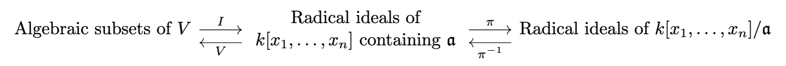

The connection between varieties and schemes: part 1
Table of Contents
Originally posted:
1. Introduction
If I don't write this (short) blog post right now, I will descend into madness. This simple idea need to be spelled out, explicitly, in my personal repository of knowledge, or else I will go off the deep end. The goal of this blog post is to describe the fully faithful functor going from varieties to schemes. This, in a sense, gives us a way to think of varieties as a particular kind of scheme. In a later blog post, I'll discuss the image of this functor, so we can construct a true categorical equivalence between varieties and a subcategory of schemes. The second section of this post follows Hartshorne, filling in details.
2. A few basic facts
Before jumping into this, let's recall a few important facts about varieties, their coordinate rings, and the connection between the geometric properties of the variety, and the algebraic properties of the coordinate ring. This gives a certain amount of intuition for why we introduce the idea of a "ring spectrum" in the first place.
Just to quickly recap: a variety is an irreducible algebraic set (in the Zariski topology). To build intuition, we will focus on the case of affine varieties, although the theory is similar for (quasi-)projective varieties. In the case of an affine variety \(V \subset \mathbb{A}^n(k)\), the coordinate ring \(A(V)\) is given by \(k[x_1, \dots, x_n]/I(V)\) where \(I(V)\) is the ideal generated by all polynomials vanishing on \(V\). We will prove the following result:
Theorem 2.1. Let \(V \subset \mathbb{A}^n(k)\) be an affine variety, let \(A(V)\) be the coordinate ring. We have natural, one-to-one correspondences between:
- Radical ideals of \(A(V)\) and algebraic subsets of \(V\).
- Prime ideals of \(A(V)\) and subvarieties of \(V\) (that is, varieties contained in \(V\)).
- Maximal ideals of \(A(V)\) and points of \(V\).
To prove this result, let us first prove some very basic results in algebra which you probably already know.
Theorem 2.2. Let \(k\) be algebraically closed. Every maximal ideal of \(k[x_1, \dots, x_n]\) is of the form \((x_1 - p_1, \dots, x_n - p_n)\) for points \(p_j \in k\). Moreover, if \(\mathfrak{a}\) is an ideal, then \(V(\mathfrak{a}) = \emptyset\) if and only if \(\mathfrak{a} = (1)\).
This result relies on a somewhat deeper result in commutative algebra: If \(k\) is a field and \(A\) is a finitely-generated \(k\) -algebra, with \(\mathfrak{m}\) a maximal ideal in \(A\), then \(A/\mathfrak{m}\) is a finite field extension of \(k\). When \(k\) is algebraically closed, there are no non-trivial algebraic extensions, and since every finite extension is algebraic, it follows that we must have \(A/\mathfrak{m} \simeq k\), in this case. With this result in mind, the proof of the above claim becomes straightforward.
Proof. Clearly, any element of \((x_1 - p_1, \dots, x_n - p_n)\) vanishes at \((p_1, \dots, p_n)\). In addition, if \(P \in k[x_1, \dots, x_n]\) vanishes at \((p_1, \dots, p_n)\), we can write \(P(x_1, \dots, x_n) = \widetilde{P}(x_1 - p_1, \dots, x_n - p_n)\) where \(\widetilde{P}\) is a polynomial which vanishes at \((0, \dots, 0)\) (has no constant term). Thus, \(\widetilde{P}(x_1, \dots, x_n) = x_1 \widetilde{P}_1 + \cdots + x_n \widetilde{P}_n\) for \(\widetilde{P}_j \in k[x_1, \dots, x_n]\) which implies that \(P \in (x_1 - p_1, \dots, x_n - p_n)\). We have the evaluation homomorphism \(\text{ev} : k[x_1, \dots, x_n] \rightarrow k\) taking \(P\) to \(P(p_1, \dots, p_n)\). Obviously \(\text{Ker}(\text{ev}) = (x_1 - p_1, \dots, x_n - p_n)\), from what we proved above, so \(k[x_1, \dots, x_n]/(x_1 - p_1, \dots, x_n - p_n) \simeq k\). Thus, \((x_1 - p_1, \dots, x_n - p_n)\) is maximal, as the quotient is a field.
On the other hand, if \(\mathfrak{m}\) is maximal, we know that the map \(k \to k[x_1, \dots, x_n]/\mathfrak{m}\) with \(s \mapsto s + \mathfrak{m}\) is an isomorphism. The reason is because \(k[x_1, \dots, x_n]/\mathfrak{m} \simeq k\), and composing these maps, we get a ring homomorphism from \(k\) to \(k\), which is necessarily an isomorphism.
Let \(p_1, \dots, p_n \in k\) be chosen so that \(p_j + \mathfrak{m} = x_j + \mathfrak{m}\). Then if \(P \in \mathfrak{m}\), we have
\begin{equation} P(p_1, \dots, p_n) + \mathfrak{m} = P(x_1, \dots, x_n) + \mathfrak{m} = 0 + \mathfrak{m} \end{equation}so \(P(p_1, \dots, p_n) = 0\). Thus, \(\mathfrak{m} \subset (x_1 - p_1, \dots, x_n - p_n)\). It is also clear that \((x_1 - p_1, \dots, x_n - p_n) \subset \mathfrak{m}\), as \(x_j - p_j \in \mathfrak{m}\) for all \(j\). Thus, we have equality as desired.
Clearly, when \(\mathfrak{a} = (1)\) we have \(V(\mathfrak{a}) = \emptyset\). In addition, if \(\mathfrak{a} \neq (1)\), it is contained in a maximal ideal \(\mathfrak{b} = (x_1 - p_1, \dots, x_n - p_n)\), and \(V(\mathfrak{a}) \supset V(\mathfrak{b}) = (p_1, \dots, p_n)\), so in particular, \(V(\mathfrak{a}) \neq \emptyset\). \(\blacksquare\)
Theorem 2.3. Let \(k\) be algebraically closed, let \(\mathfrak{a}\) be an ideal in \(k[X_1, \dots, X_n]\). Then \(I(V(\mathfrak{a})) = \text{Rad}(\mathfrak{a})\), the radical ideal of \(\mathfrak{a}\), which we recall is defined as \(\text{Rad}(\mathfrak{a}) = \{a \ | \ a^n \in \mathfrak{a} \ \text{for some} \ n \in \mathbb{N}\}\).
Lemma 2.1. Let \(\mathfrak{a}\) be an ideal of commutative unital ring \(R\), let \(\pi : R \rightarrow R/\mathfrak{a}\) be the quotient homomorphism. There is a natural one-to-one correspondence between ideals of \(R/\mathfrak{a}\) and ideals of \(R\) which contain \(\mathfrak{a}\). Moreover, radical, prime, and maximal ideals are in direct correspondence under this map and \(R/\mathfrak{a}\) is Noetherian if \(R\) is.
Proof. To begin, given ring \(R\), ideal \(\mathfrak{a}\), quotient map \(\pi : R \rightarrow R/\mathfrak{a}\) (which is a ring homomorphism), and \(\mathfrak{b}\) an ideal of \(R/\mathfrak{a}\), note that \(\pi^{-1}(\mathfrak{b})\) contains \(\mathfrak{a}\), as \(\mathfrak{a} = \pi^{-1}(\pi(0))\), and \(\pi(0) \in \mathfrak{b}\). This immediately also means that \(0 \in \pi^{-1}(\mathfrak{b})\). If \(a, b \in \pi^{-1}(\mathfrak{b})\), then \(\pi(a), \pi(b) \in \mathfrak{b}\), so \(\pi(a + b) \in \mathfrak{b}\), and \(a + b \in \pi^{-1}(\pi(a + b))\) is in \(\pi^{-1}(\mathfrak{b})\). Similarly, if \(a \in \pi^{-1}(\mathfrak{b})\), then \(-\pi(a) = \pi(-a) \in \mathfrak{b}\), so \(-a \in \pi^{-1}(\mathfrak{b})\). Thus, \(\pi^{-1}(\mathfrak{b})\) is a subgroup of \(R\). Moreover, given any \(r \in R\), note that for \(a \in \pi^{-1}(\mathfrak{b})\), then \(\pi(ra) = \pi(r) \pi(a) \in \mathfrak{b}\) as \(\pi(a) \in \mathfrak{b}\), so \(ra \in \pi^{-1}(\mathfrak{b})\). Thus, \(\mathfrak{c} = \pi^{-1}(\mathfrak{b})\) is an ideal. On the other hand, let \(\mathfrak{c}\) be an ideal of \(R\) containing \(\mathfrak{a}\). We already know that \(\pi(\mathfrak{c})\) is a subgroup. In addition, given \(\pi(r) \in R/\mathfrak{a}\) and \(a \in \mathfrak{c}\), note that \(\pi(r) \pi(a) = \pi(r a) \in \pi(\mathfrak{c})\) as \(ra \in \mathfrak{c}\). From here, since \(\pi\) is surjective, if \(\mathfrak{b}\) is an ideal of \(R/\mathfrak{a}\), then \(\pi(\pi^{-1}(\mathfrak{b})) = \mathfrak{b}\). We know that for some ideal \(\mathfrak{c}\) of \(R\) containing \(\mathfrak{a}\), \(\mathfrak{c} \subset \pi^{-1}(\pi(\mathfrak{c}))\). Given some \(a \in \pi^{-1}(\pi(\mathfrak{c}))\), so \(\pi(a) \in \pi(\mathfrak{c})\), it follows that \(\pi(a - b) = \pi(0)\) for some \(b \in \mathfrak{c}\), so \(a = b + k\) for some \(k \in \mathfrak{a}\). But \(\mathfrak{a} \subset \mathfrak{c}\), so \(a \in \mathfrak{c}\). Thus, \(\pi^{-1}(\pi(\mathfrak{c})) = \mathfrak{c}\), and we have our desired one-to-one correspondence via \(\pi\).
Next, note that
- If \(\mathfrak{c} \subset R\) containing \(\mathfrak{a}\) is radical, consider some \(\pi(a)^n = \pi(a^n) \in \pi(\mathfrak{c})\), so \(a^n \in \mathfrak{c}\) so \(a \in \mathfrak{c}\), so \(\pi(a) \in \pi(\mathfrak{c})\). Conversely, if \(\mathfrak{b} \subset R/\mathfrak{a}\) is an ideal and \(a^n \in \pi^{-1}(\mathfrak{b})\), then \(\pi(a^n) = \pi(a)^n \in \mathfrak{b}\), so \(\pi(a) \in \mathfrak{b}\) and \(a \in \pi^{-1}(\mathfrak{b})\).
- If \(\mathfrak{c} \subset R\) containing \(\mathfrak{a}\) is prime, consider \(\pi(a) \pi(b) = \pi(ab) \in \pi(\mathfrak{c})\). Then \(ab \in \pi^{-1}(\pi(\mathfrak{c})) = \mathfrak{c}\), so \(a \in \mathfrak{c}\) or \(b \in \mathfrak{c}\) so \(\pi(a) \in \pi(\mathfrak{c})\) or \(\pi(b) \in \pi(\mathfrak{c})\). Moreover, \(\pi(\mathfrak{c})\) is a proper ideal because \(\mathfrak{a} \subset \mathfrak{c}\), so taking \(j \in R - \mathfrak{c}\), we note that \(j - a \notin \mathfrak{a}\) for any \(a \in \mathfrak{c}\), which implies \(\pi(j)\) is not in \(\pi(\mathfrak{c})\). Conversely, if \(ab \in \pi^{-1}(\mathfrak{b})\) then \(\pi(ab) = \pi(a) \pi(b) \in \mathfrak{b}\), so \(\pi(a) \in \mathfrak{b}\) or \(\pi(b) \in \mathfrak{b}\) implying \(a \in \pi^{-1}(\mathfrak{b})\) or \(b \in \pi^{-1}(\mathfrak{b})\). Obviously, if \(\mathfrak{b}\) is proper then since \(\pi\) is surjective, \(\pi^{-1}(\mathfrak{b})\) is proper.
- If \(\mathfrak{c} \subset R\) containing \(\mathfrak{a}\) is maximal, then if \(\pi(\mathfrak{c})\) isn't, so \(\pi(\mathfrak{c}) \subset \mathfrak{e}\) for some proper ideal \(\mathfrak{e}\) where the containment is proper, then \(J \subset \pi^{-1}(\mathfrak{e})\), where containment is proper and \(\pi^{-1}(\mathfrak{e})\) is a proper ideal (same justification as the previous bullet point), a contradiction. Conversely, if \(\mathfrak{b} \subset R/\mathfrak{a}\) is maximal and \(\pi^{-1}(\mathfrak{b}) \subset \mathfrak{e}\) with proper containment for proper ideal \(\mathfrak{e}\), then \(\mathfrak{e}\) contains \(\mathfrak{a}\), and we note that \(\mathfrak{b} \subset \pi(\mathfrak{e})\) with proper containment, and \(\pi(\mathfrak{e})\) being proper (same justification as the previous bullet point). This is a contradiction.
which completes the second part of the proof. Finally, suppose \(\mathfrak{b} \subset R\) containing \(\mathfrak{a}\) is finitely generated, so \(\mathfrak{b} = (a_1, \dots, a_n)\). Clearly, \(\pi(\mathfrak{b}) = (\pi(a_1), \dots, \pi(a_n))\). Since every ideal of \(R/\mathfrak{a}\) is of the form \(\pi(\mathfrak{b})\) for such an ideal \(\mathfrak{b}\), it follows that \(R/\mathfrak{a}\) is Noetherian if \(R\) is. \(\blacksquare\)
Lemma 2.2. If \(k\) is algebraically closed and \(V = V(\mathfrak{a})\) is an algebraic set, there is a natural one-to-one correspondence between algebraic subsets of \(V\) and radical ideals of \(k[x_1, \dots, x_n]/\mathfrak{a}\). In addition, this correspondence is also between irreducible algebraic subsets and prime ideals, and points and maximal ideals.
Proof. Using the previous lemma, \(\pi : k[x_1, \dots, x_n] \rightarrow k[x_1, \dots, x_n]/\mathfrak{a}\) gives a natural correspondence between polynomial ideals containing \(\mathfrak{a}\) and ideals of \(k[x_1, \dots, x_n]/\mathfrak{a}\). We also have the map \(W \mapsto I(W)\) from algebraic subsets \(W \subset V\) to polynomial ideals \(I(W) \supset I(V(\mathfrak{a})) \supset \mathfrak{a}\). Moreover, we know that \(I(W)\) is always radical, as if \(f^n = 0\) on \(W\), then \(f = 0\) on \(W\). On the other hand, we have the map \(\mathfrak{b} \mapsto V(\mathfrak{b})\) of radical polynomial ideals \(\mathfrak{b} \supset \mathfrak{a}\) to \(V(\mathfrak{b}) \subset V(\mathfrak{a}) = V\), algebraic subsets of \(V\). When \(W = W(\mathfrak{c})\) is algebraic, it is easy to see that \(V(I(W)) = W\). In particular, it is clear that if \(p \in W\), then every polynomial in \(I(W)\) will vanish at \(p\), so \(p \in V(I(W))\). In addition, if \(p \in V(I(W))\), then every polynomial in \(I(W)\) vanishes at \(p\), including those in \(\mathfrak{c}\), which means that \(p \in V(\mathfrak{c}) = W\). Moreover, from the affine Nullstellensatz, \(I(V(\mathfrak{b})) = \text{Rad}(\mathfrak{b}) = \mathfrak{b}\), for \(\mathfrak{b}\) radical. Thus, the maps described above are inverses of one another, and all together, we have the following diagram:

which gives a natural, one-to-one correspondence between algebraic subsets of \(V\) and radical ideals of \(k[x_1, \dots, x_n]/I\).
The other correspondences carry through similarly. In particular, if \(W\) is irreducible, we know \(I(W)\) is prime. In addition, if \(I\) is prime, then \(I(V(I)) = \text{Rad}(I) = I\) is prime, so \(V(I)\) is irreducible. Similarly, if \(W = \{ (p_1, \dots, p_n) \} \subset V\), a point, then \(I(W) = (x_1 - p_1, \dots, x_n - p_n)\) (we more or less proved this earlier) which is maximal. Conversely, if \(J\) is maximal then the weak Nullstellensatz implies \(J = (x_n - p_1, \dots, x_n - p_n)\) for some collection of \(p_j\). Thus, \(V(J) = \{(p_1, \dots, p_n)\}\). \(\blacksquare\)
Proof of Theorem 2.1. Recall that \(A(V) = k[x_1, \dots, x_n]/I(V)\). We know that \(V = V(\mathfrak{a})\) for some ideal \(\mathfrak{a}\) and \(I(V) = I(V(\mathfrak{a})) = \mathfrak{a}\) as \(V(\mathfrak{a})\) is irreducible. Thus, we can simply apply the previous lemma directly, and we are done: we have our one-to-one correspondence between the different types of ideals of \(A(V)\) and the different types of subsets of \(V\).
The purpose of the previous section was to demonstrate the deep relationship between geometric objects (varieties) and their associated algebraic objects (coordinate rings). This begs the question of whether this correspondence can be generalized to a more abstract setting, giving us powerful new techniques to study arbitrary rings and increased flexibility in the study of geometric objects via their associated algebraic properties. The first step in this direction is discussing ring spectra. Recall that if \(A\) is a (commutative) ring, then \(\text{Spec}(A)\) is the collection of all prime ideals of \(A\), which we endow with the Zariski topology of closed sets \(V(\mathfrak{a}) = \{\mathfrak{p} \in \text{Spec}(A) \ | \ \mathfrak{p} \supset \mathfrak{a}\}\) for any ideal \(\mathfrak{a} \subset A\).
The motivation for the study of spectra comes from the algebraic-geometric correspondence of the previous section. In particular, we have a correspondence between maximal ideals of the coordinate ring \(A(V)\) and points of \(V\). So, in order to study the underlying geometry of \(V\), it is reasonable to suspect that one can study algebraic properties of the maximal ideals of \(A(V)\). One can imagine generalizing this program of study. Instead of starting with a variety \(V\), and studying the particular ring \(A(V)\), we can instead start with an arbitrary ring \(A\) and study the "underlying space" by looking at the maximal ideals. However, there is one problem: maximal ideals are not well-behaved from a categorical perspective. If \(f : A \rightarrow B\) is a ring homomorphism, then \(f^{-1}(\mathfrak{a})\) for \(\mathfrak{a}\) a maximal ideal in \(B\) is not necessarily maximal. However, if we were instead to look at the broader collection of prime ideals of a ring, then this would be true: the inverse image of a prime ideal is prime.
3. Constructing the functor
Remark 3.1. Just like a projective variety is locally an affine variety, we know that a scheme is a space which is locally a ring spectrum. We wish to exhibit some sort of correspondence between varieties and schemes: it should be somewhat clear that there must be some sort of relationship. In particular, given the results proved earlier, if we take an affine variety \(V\) and list off all of its irreducible closed subsets (in the Zariski topology), we know that:
- We are not throwing away any topological information about the variety \(V\). A set is closed in \(V\) if and only if it is a finite union of irreducible closed subsets.
- These set will be in bijective correspondence with \(\text{Spec}(A(V))\).
The hope is that this bijective correspondence has extra nice structure, and it can be promoted to a map which takes a projective variety (locally affine) to a scheme (locally a ring spectrum).
We will prove a result of this form. First, a few definitions.
Recall that we allow our category of schemes over \(k\), \(\text{Var}(k)\), to contain all (quasi)-affine varieties, and all (quasi)-projective varieties over \(k\), endowed with the Zariski topology, and having an associated sheaf of regular functions. We take a morphism of schemes in this category, \(f : X \rightarrow Y\), to be one which is continuous, and which pulls-back regular functions to regular functions (in other words, there is an induced morphism of sheaves \(f^{\#} : \mathcal{O}_Y \rightarrow f_{*} \mathcal{O}_X\) given by
\begin{equation} f^{\#}(U)(s) = s \circ f \end{equation}for \(s \in \mathcal{O}_Y(U)\). On the other hand, we have the category of schemes over \(k\), which is simply the comma category \(\text{Sch}(k) = (\text{id} \downarrow \text{Spec}(k))\) with \(\text{id} : \text{Sch} \rightarrow \text{Sch}\) being the identity functor from the category of schemes to itself. We will construct a fully faithful functor from \(\text{Var}(k)\) to \(\text{Sch}(k)\).
Theorem 2.1. There is a fully faithful functor \(T : \text{Var}(k) \rightarrow \text{Sch}(k)\). Given variety \(V\), its underlying topological space is homeomorphic to the set of closed points of \(T(V)\), and the sheaf of regular functions on \(V\) is isomorphic to the structure sheaf restricted to this closed set, via the map induced by the homeomorphism.
This functor that we construct is precisely how we imagine it to be in the first remark of this section.
Definition. Given topological space \(X\), let \(t(X)\) denote the set of all irreducible closed subsets of \(X\). If \(Y\) is a closed subset of \(X\), then \(t(Y) \subset t(X)\), as any closed irreducible subset of \(Y\) is a closed irreducible subset of \(X\). Additionally,
\begin{equation} t(Y_1) \cup t(Y_2) = t(Y_1 \cup Y_2) \end{equation}The direction of \(t(Y_1 \cup Y_2) \subset t(Y_1) \cup t(Y_2)\) follows from the fact that if \(C \subset Y_1 \cup Y_2\) is closed irreducible, then either \(C \cap Y_1 = C\) or \(C \cap Y_2 = C\), the other direction is easy. Finally,
\begin{equation} \displaystyle\bigcap_{\alpha \in J} t(Y_{\alpha}) = t \left( \displaystyle\bigcap_{\alpha \in J} Y_{\alpha} \right) \end{equation}As if \(C\) is closed irreducible in each \(Y_{\alpha}\) if and only if \(C\) is closed irreducible in \(\cap_{\alpha \in J} Y_{\alpha}\). So, given topological space \(X\), the sets \(t(Y)\) for \(Y\) a closed subset of \(X\) form a topology for \(t(X)\).
Definition. Given continuous \(f : X_1 \rightarrow X_2\), we define \(t(f) : t(X_1) \rightarrow t(X_2)\) as taking irreducible closed subset \(C\) to \(\overline{f(C)}\), which is irreducible as if \(C_1 \cup C_2 = \overline{f(C)}\), then every point \(x \in C\) is taken by \(f\) to \(\overline{f(C)}\) and is thus in \(C_1\) or \(C_2\), so \(C \subset f^{-1}(C_1)\) or \(C \subset f^{-1}(C_2)\) (it can't intersect both), so \(f(C) \subset C_1\) or \(C_2\), implying its closure is also in one of these sets. Also note that \(t(f)\) is continuous, as we have
\begin{align} t(f)^{-1}(t(Y)) = \{ C \in t(X_1) \ | \ \overline{f(C)} \subset Y\} = t(f^{-1}(Y)) \end{align}since \(Y\) is itself closed.
Claim. As we have defined it above (on arrows and objects), \(t : \textbf{Top} \rightarrow \textbf{Top}\) is a functor.
Proof. We just need to check compositions. Indeed, note that \(t(f \circ g)(C) = \overline{(f \circ g)(C)}\). Since \(f\) is continuous, \(f(\overline{g(C)}) \subset \overline{(f \circ g)(C)}\). Thus, \(\overline{f(\overline{g(C)}))} \subset \overline{(f \circ g)(C)}\). However, we also have \(g(C) \subset \overline{g(C)}\), so \((f \circ g)(C) \subset f(\overline{g(C)})\), and we can then take closures of both sides to see that
\begin{align} (t(f) \circ t(g))(C) = \overline{f(\overline{g(C)})} = \overline{(f \circ g)(C)} = t(f \circ g)(C) \end{align}so we have the desired composition.
Definition. Define the map \(\alpha : X \rightarrow t(X)\) as \(\alpha(x) = \overline{\{x\}}\), where we are taking the closure in the topology for \(X\). This set is irreducible because if \(\overline{\{x\}} = C_1 \cup C_2\), then \(x \in C_1\) or \(x \in C_2\), so \(\overline{\{x\}} \subset C_1\) or \(C_2\).
Lemma. The map \(U \mapsto \alpha^{-1}(U)\) bijectively takes the open sets of \(t(X)\) to the open sets of \(X\).
Proof. Cconsider the inverse mapping \(V = X - C \mapsto t(X) - t(C)\) of open sets of \(X\) to open sets of \(t(X)\). Note that \(\alpha(x) = \overline{\{x\}} \in t(X) - t(C)\) if and only if \(\overline{\{x\}} \notin t(C)\), which occurs if and only if \(\overline{\{x\}}\) is not an irreducible closed subset of \(C\). This in turn occurs if and only if \(x \notin C\) (if and only if \(x \in X - C\)). It follows immediately that
\begin{equation} \alpha^{-1}(t(X) - t(C)) = X - C \end{equation}so the mapping \(X - C \mapsto t(X) - t(C)\) has a left-inverse. On the other hand, every closed set of \(t(X)\) is of the form \(t(X) - t(C)\), so \(X - C \mapsto t(X) - t(C)\) is surjective/has a right-inverse. The result follows. \(\blacksquare\)
Corollary. The map \(\alpha\) is a topological embedding. It is obviously continuous. Moreover, if \(U\) is open in \(X\), then it is equal to some unique \(\alpha^{-1}(W)\) with \(W\) open in \(t(X)\), and
\begin{equation} \alpha(U) = \alpha(\alpha^{-1}(W)) = W \cap \text{Im}(\alpha) \end{equation}and we are done.
Lemma. The map \((X, \mathcal{O}_X) \mapsto (t(X), \alpha_{*} \mathcal{O}_X)\) is a functor \((t, \alpha_{*}) : \textbf{LRngSp} \rightarrow \textbf{LRngSp}\) from the category of locally ringed spaces to itself, where if \((f, f^{\#})\) is a morphism of locally ringed spaces, then \((t, \alpha_{*})(f, f^{\#}) = (g, g^{\#})\) is given by
\begin{equation} g^{\#} : t(f)_{*} \end{equation}Proof. Since \(U \mapsto \alpha^{-1}(U)\) gives a bijective correspondence of open sets, the stalks of \(\mathal_{*} \mathcal{O}_X\) are isomorphic to the stalks of \(\mathcal{O}_X\). Therefore, \((t(X), \alpha_{*} \mathcal{O}_X)\) is a locally ringed space.
Lemma. Let \(V\) be an affine variety, and as usual, let \(A(V)\) be the coordinate ring. Define the map \(\widetilde{\beta} : t(V) \rightarrow \text{Spec}(A(V))\) as \(\widetilde{\beta}(C) = I(C)\): the ideal of elements of \(A(V)\) vanishing on \(C\). Then \(\widetilde{\beta}\) is a homeomorphism, when we endow \(t(V)\) with the topology introduced earlier and \(\text{Spec}(A(V))\) with the usual Zariski topology.
Proof. We already know that \(\widetilde{\beta}\) is a bijection, we proved this in the first section. Given closed subset \(t(Y)\) of \(t(V)\), the first claim is that \(\widetilde{\beta}(t(Y)) = V(I(Y))\). Note that if \(C \in t(Y)\), so \(C\) is closed irreducible contained in \(Y\), \(C \subset Y\), then \(I(Y) \subset I(C)\), so \(\widetilde{\beta}(C) \in V(I(Y)) \subset \text{Spec}(A(V))\). On the other hand, given some \(\mathfrak{p} \in V(I(Y))\), then \(\mathfrak{p} \supset I(Y)\) and \(V_{\text{affine}}(\mathfrak{p})\) is closed irreducible. Moreover, it is a subset of \(V_{\text{affine}}(I(Y)) = Y\), as \(Y\) is a closed subset of \(V\), hence itself an algebraic subset. Therefore, \(V_{\text{affine}}(\mathfrak{p}) \in t(Y)\) and \(\widetilde{\beta}(V_{\text{affine}}(\mathfrak{p})) = \mathfrak{p}\). This proves the first claim. Next, note that
\begin{align} \widetilde{\beta}^{-1}(V(\mathfrak{a})) = \{C \in t(V) \ | \ I(C) \supset \mathfrak{a}\} = t(V_{\text{affine}}(\mathfrak{a})) \end{align}so that \(\widetilde{\beta}\) is a homeomorphism as desired. \(\blacksquare\)
Corollary. The map \(\beta : V \rightarrow \text{Spec}(A(V))\) sending \(p \in V\) to \(\beta(p) = \mathfrak{m}_p\): the maximal ideal of \(A(V)\) vanishing at \(p\), is a topological embedding when the domain and codomain are given the Zariski topology.
Proof. We have \(\beta = \widetilde{\beta} \circ \alpha\), where in this context, \(\alpha(p) = \overline{\{p\}} = \{p\}\). We already showed that \(\alpha\) is an embedding and \(\widetilde{\beta}\) is a homeomorphism, which is all we need. \(\blacksquare\)
From here, we can prove the first main lemma on the path towards constructing the desired functor.
Lemma. Let \(V\) be an affine variety, and as usual, let \(A(V)\) be the coordinate ring. Then the pair \((t(V), \alpha_{*} \mathcal{O}_V)\) is an affine scheme, where \(\alpha : V \rightarrow t(V)\) is continuous from the previous lemma. Also note that \(\mathcal{O}_V\) is the usual sheaf of regular functions on the variety.
Proof. We define \((t(V), \alpha_{*} \mathcal{O}_V) \rightarrow (\text{Spec}(A(V)), \mathcal{O}_{\text{Spec}(A(V))})\) a morphism of locally ringed spaces via \(\widetilde{\beta}\), which is a homeomorphism of the underlying topological spaces. We also define for open \(U \subset \text{Spec}(A(V))\), a map
\begin{equation} \mathcal{O}_{\text{Spec}(A(V))}(U) \rightarrow \widetilde{\beta}_{*}(\alpha_{*} \mathcal{O}_V)(U) = \mathcal{O}_V((\widetilde{\beta} \circ \alpha)^{-1}(U)) = \mathcal{O}_V(\beta^{-1}(U)) \end{equation}Begin with a section \(s \in \mathcal{O}_{\text{Spec}(A(V))}(U)\), as well as a point \(p \in \beta^{-1}(U)\), take \(\widetilde{s}(p)\) to be the image of \(s\) in stalk \(\mathcal{O}_{\text{Spec}(A(V)), \beta(p)} \simeq A(V)_{\mathfrak{m}_p}\) (remember this from Hartshorne), and then passing to
\begin{equation} A(V)_{\mathfrak{m}_p}/\phi(\mathfrak{m}_p) \simeq (A(V)/\mathfrak{m}_p)_{\mathfrak{m}_p} \simeq k \end{equation}where \(\phi\) is the map taking \(\mathfrak{m}_p\) to the ideal generated by the images of its elements under the localization map \(A(V) \mapsto A(V)_{\mathfrak{m}_p}\). We are also using the fact that localization commutes with quotients. It follows that \(\widetilde{s} : \beta^{-1}(U) \rightarrow k\) is a well-defined function. We claim that:
- \(\widetilde{s} : \beta^{-1}(U) \rightarrow k\) is a regular function. Recall that by definition of the structure sheaf, \(s\) is a function \(s : U \rightarrow \bigsqcup_{\mathfrak{p} \in U} A(V)_{\mathfrak{p}}\) such that for each \(\mathfrak{p} \in U\), there exists a neighbourhood \(W\) with \(\mathfrak{p} \in W \subset U\) and \(f, g \in A(V)\) with \(g \notin \mathfrak{q}\) and \(s(\mathfrak{q}) = \frac{f}{g}\) for all \(\mathfrak{q} \in W\). Recall that the isomorphism from the stalk \(\mathcal{O}_{\text{Spec}(A(V)), \beta(p)}\) to \(A(V)_{\mathfrak{m}_p}\) is simply obtained by sending the germ obtained from \(s\) to \(s(\mathfrak{m}_p) = \frac{f}{g}\), where \(f, g \in A(V)\) and \(g \notin \mathfrak{q}\) for \(\mathfrak{q}\) in some Zariski-open set \(W \subset U\) around \(\mathfrak{m}_p\) (so \(g\) does not vanish at any \(q\) such that \(\beta(q) = \mathfrak{m}_q \in W\)). In particular, \(s(\mathfrak{m}_q) = \frac{f}{g}\) for all \(q \in \beta^{-1}(W)\) (a Zariski-open neighbourhood of \(p\)). Taking the quotient in \(\mathfrak{m}_q\) simply yields \(\frac{f(q)}{g(q)}\). Thus, the map \(\widetilde{s} : \beta^{-1}(U) \rightarrow k\), on a neighbourhood of each \(p \in \beta^{-1}(U)\), can be written as a quotient of two polynomials, and is therefore regular.
- The map taking \(s \in \mathcal{O}_{\text{Spec}(A(V))}(U)\) to \(\widetilde{s} \in \mathcal{O}_V(\beta^{-1}(U))\) is an isomorphism of rings. The fact that this map is a homomorphism follows easily from the definition. Note that if \(\widetilde{s} \in \mathcal{O}_V(\beta^{-1}(U))\) is equal to \(0\), then in particular, \(\widetilde{s}(q) = 0\) for all \(q \in \beta^{-1}(U)\). We know that on some Zariski-open neighbourhood \(W \subset U\) of \(\beta(p) = \mathfrak{m}_p\), that \(s(\mathfrak{q}) = \frac{f}{g}\), so for any \(q \in \beta^{-1}(W)\) (thus \(\mathfrak{m}_q \in W\)) we have \(\widetilde{s}(q) = \frac{f(q)}{g(q)}\), which means that \(f = 0\) on a Zariski-open set \(\beta^{-1}(W)\). Thus, \(f = 0\). The reason for this is because the complement of \(\beta^{-1}(W)\) in \(V\) and \(f^{-1}(0)\) are both closed subsets of \(V\). Since \(V\) is irreducible, one of them must be all of \(V\), and it can't be the complement of \(\beta^{-1}(W)\). So \(s(\mathfrak{q}) = 0\) on a neighbourhood of \(\mathfrak{p}\). This holds at every point, so \(s = 0\), and the map is injective. To prove surjectivity, note that if \(\widetilde{s} : \beta^{-1}(U) \rightarrow k\) is a regular function, then in some neighbourhood \(W\) of each \(p \in \beta^{-1}(U)\), we have \(\widetilde{s}(q) = \frac{f(q)}{g(q)}\), where \(g\) does not vanish on \(W\). We know that \(\beta\) is a homeomorphism onto its image, so \(\beta(W) = \widetilde{W} \cap \beta(\beta^{-1}(U))\) with \(\widetilde{W}\) open in \(\text{Spec}(A(V))\). Then since \(\beta\) is injective, \(W = \beta^{-1}(\widetilde{W} \cap U)\). We define \(s : U \rightarrow \bigsqcup_{\mathfrak{p} \in U} A(V)_{\mathfrak{p}}\) as \(s|_{\widetilde{W} \cap U} = \frac{f}{g}\). Of course, this requires that \(g \notin \mathfrak{p}\) for any \(\mathfrak{p} \in \widetilde{W} \cap U\). We know that \(g\) does not vanish on \(\beta^{-1}(\widetilde{W} \cap U)\), so for each \(p \in \beta^{-1}(\widetilde{W} \cap U)\), \(g \notin \mathfrak{m}_p = \beta(p)\), which is what we desire. It is then clear from here that this \(s\) is mapped to \(\widetilde{s}\) under the mapping.
- Each of the induced maps \(\mathcal{O}_{\text{Spec}(A(V)), \beta(p)} \rightarrow \alpha_{*} \mathcal{O}_{V, p} \simeq \mathcal{O}_{V, p}\) is a morphism of local rings (the natural identification of the pushforward sheaf with the original sheaf follows from the fact that \(U \mapsto \alpha^{-1}(U)\) bijectively sends open sets to open sets). To see this, note that we have the usual identification \(\mathcal{O}_{\text{Spec}(A(V)), \beta(p)} \simeq A(V)_{\mathfrak{m}_p}\) and \(\mathcal{O}_{V, p} \simeq A(V)_{\mathfrak{m}_p}\). The induced map goes as follows: take some \(\frac{f}{g} \in A(V)_{\mathfrak{m}_p}\), pick some section of the structure sheaf taking on this value at \(\mathfrak{m}_p\), \(s\). We then get \(\widetilde{s}\). In a neighbourhood of \(p\), we have \(\widetilde{s}(q) = \frac{f(q)}{g(q)}\), as we showed previously. Under the identification, this regular function becomes \(\frac{f}{g}\) in \(A(V)_{\mathfrak{m}_p}\), so in fact, the morphism reduces to identity upon conjugating by isomorphisms, and is therefore clearly a local morphism.
- The maps define an isomorphism of sheaves, \(\mathcal{O}_{\text{Spec}(A(V))} \rightarrow \widetilde{\beta}_{*} \alpha_{*} \mathcal{O}_V\): this simply means that it commutes with restricting to smaller open sets, which is quite clearly the case.
Thus, we have exhibited an isomorphism of locally ringed spaces. It follows that \((t(V), \alpha_{*} \mathcal{O}_V)\) is an affine scheme, as desired. \(\blacksquare\)
The next step from here is to generalize these results to arbitrary schemes, where we will obviously use the fact that a generic scheme is locally affine. First we need a technical lemma.
Lemma. If \(X\) is a topological space and \(U\) is an irreducible open subsets, then \(t(U)\) is homeomorphic to \(t(X) - t(X - U)\).
Proof. Recall that if \(\iota : U \rightarrow X\) is the inclusion, then \(t(\iota) : t(U) \rightarrow t(X)\) is continuous. Note that if \(C\) is an irreducible closed subset of \(U\), then its closure in \(X\) certainly can't be contained in \(X - U\), so the image of \(t(\iota)\) is in \(t(X) - t(X - U)\). We define the map \(\eta : t(X) - t(X - U) \rightarrow t(U)\) to take \(C\) to \(C \cap U\). The reason why \(C \cap U\) is irreducible is as follows: if we had \(C \cap U = (C_1 \cap U) \cup (C_2 \cap U)\), then \(C\) is the union of closed sets \(C_1 \cap C\), \(C_2 \cap C\), and \(U^{C} \cap C\). One of these must be all of \(C\), and it can't be the third option, so either \(C \subset C_1\) or \(C \subset C_2\), implying \(C \cap U = C_1 \cap U\) or \(C \cap U = C_2 \cap U\). To see that \(\eta\) is an inverse for \(t(\iota)\), note that \(C\) is a closed set in \(X\) containing \(C \cap U\). Moreover, if \(D \subset C\) is another closed set containing \(C \cap U\), then \(C = (C \cap U^{C}) \cup D\), implying \(D = C\), so \(\overline{C \cap U} = C\). On the other hand, every irreducible closed set of \(U\) is of the form \(C \cap U\), so we take the closure to get \(C\), and then map in reverse to recover \(C \cap U\). It is clear that
\begin{equation} t(\iota)(t(Y)) = \end{equation}This immediately means that if \(U\) is an open affine subvariety of \(V\), then \(t(U)\) is open.
Lemma. Let \(V\) be an arbitrary variety, then \((t(V), \alpha_{*} \mathcal{O}_V)\) is a scheme.
Proof. Let \(U_i\) be a (finite) open cover of \(V\) such that we have an isomorphism of varieties \(\Phi_i : (U_{i}, \mathcal{O}_V|_{U_{i}}) \rightarrow (V_{i}, \mathcal{O}_{V_{i}})\) where \(V_{i}\) is an affine variety with its sheaf of regular functions.
So, we have shown that in a natural way, we can take any variety to a scheme.
Lemma. The map \((V, \mathcal{O}_V) \mapsto (t(V), \alpha_{*} \mathcal{O}_V)\) is a functor from \(\text{Var}(k)\) to \(\text{Sch}(k)\).
Proof.
Now, the only thing left to prove is that this functor is fully faithful.